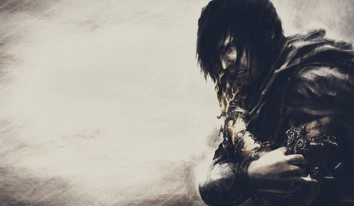
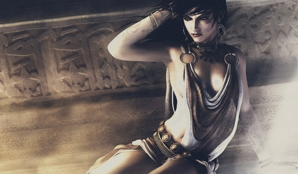
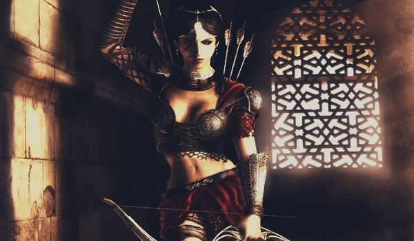
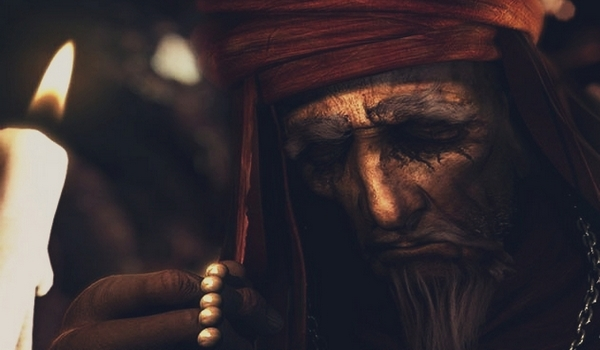

Throughout the game you will witness constant bickering between the light and the dark prince. Last strongly wants to eradicate the main hero of the good and turn it into a cynical egotist, which is characterized by great strength, but thinks only of himself. I must say that Prince slowly begin to move the same to the dark side, but who in the end will win you will know only at the end of the game. In the game there are other characters which can be read below.

Prince: Main hero controlled by the player. After dramatic experiences on the Island of the Time it is hard to tell that once he was cheerful, carefree youth. Traumatic experiences tied with Sands of Time and hundreds of fought struggles were embossed with cracks in his dangerous, severe face, now without the shadow of the smile. After the return to country overtaken by the ravages of war once again he has to take advantage of strength and acrobatic talents in order to overcome invaders and to rescue Babylon.

Kailena: Empress of Time, rescued by the hero during the previous conflict with Dahaka. She left the Island of Time along with the prince in order to find serenity in Babylon. Unfortunately, by the end of travel, their boat is being flooded, and she is captured and slain by the Vizier. Thanks to her supernatural power she doesn't disappear from the prince's life despite her fleshly death. She stay with him as a voice in his head.

Farah: Archer, perfectly known by the prince from former times when she was fighting at his side. As a result of the manipulation with Sands of Time she remembers neither the prince nor those events. It doesn't hamper her in merging with the prince in common struggle for saving Babylon. Her arch repeatedly rescues him from troubles, her sharp tongue - drives him mad.

The old man: Sage in the red, who has looked after the prince since his childhood, treating him like his own son. He recognizes the Persian prince after his return to Babylon. He leads the rebellion raised by scared off urban dwellers thanks to his prophecies and instigation. They even manage to rescue the prince and Farah from troubles.